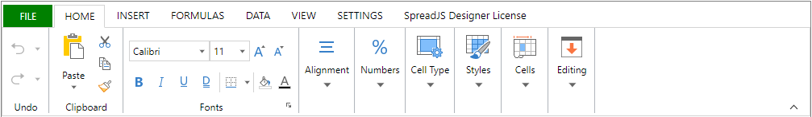
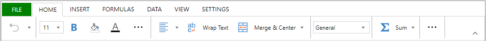
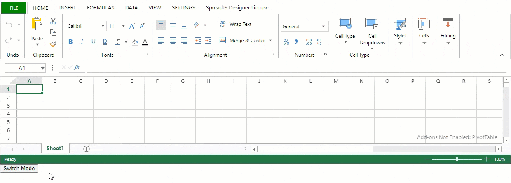
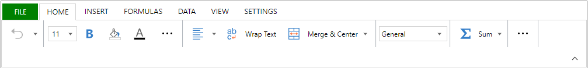

SpreadJS Designer Component provides two different ribbon modes as shown below:
Default Ribbon Mode
Toolbar Ribbon Mode
The toolbar ribbon mode is especially useful for mobile devices.
SpreadJS Designer Component launches with the default ribbon mode. However, you can follow the steps from Quick Start and switch to the toolbar ribbon mode by setting GC.Spread.Sheets.Designer.ToolbarModeConfig in the setConfig method as shown below.
| JavaScript |
Copy Code
|
|---|---|
// Initialize designer component with default ribbon mode var designer = new GC.Spread.Sheets.Designer.Designer(document.getElementById('designerHost')); // Switch to toolbar ribbon mode designer.setConfig(GC.Spread.Sheets.Designer.ToolBarModeConfig); |
|
The following example shows how you can switch between the default ribbon mode and the toolbar ribbon mode.
| JavaScript |
Copy Code
|
|---|---|
<script>
window.onload = function () {
var switchConfig = true;
var designer = new GC.Spread.Sheets.Designer.Designer(document.getElementById("designerHost"));
document.getElementById('btn').addEventListener('click', function () {
designer.setConfig(switchConfig ? GC.Spread.Sheets.Designer.ToolBarModeConfig : GC.Spread.Sheets.Designer.DefaultConfig);
switchConfig = !switchConfig;
});
}
</script>
</head>
<body>
<!--DOM element-->
<div id="designerHost" style="width:100%; height:400px;border: 1px solid gray;"></div>
<button id="btn">Switch Mode</button>
|
|
The below output will be generated:

You can set the ribbon height in the toolbar mode by using the ribbonHeight option in the toolbar config. The default and the recommended value of ribbonHeight for toolbar mode are 50.
The following code sample sets the ribbon height to 80.
| JavaScript |
Copy Code
|
|---|---|
var designer = new GC.Spread.Sheets.Designer.Designer(document.getElementById("designerHost")); var config = GC.Spread.Sheets.Designer.ToolBarModeConfig; // Set the ribbon height config.ribbon.ribbonHeight = 80; // Set the customized config designer.setConfig(config); |
|
The below output will be generated:

Note: The recommended ribbonHeight for the default ribbon mode is 115 or not defined. To retain the toolbar ribbon mode, the ribbonHeight should be set to less than 115.